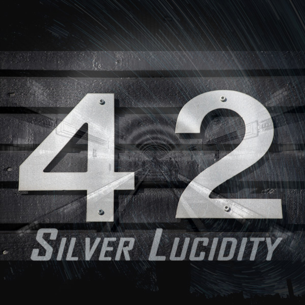

Silver Lucidity
Silver Lucidity is a concept album project with musicians from all over the world.
- Concept Albums
- Silver Lucidity - Album Overview
- Star-Reaper (2021)
- Far From The Tree (2022)
- Timewaster (2024)
- 42 (in mixing status, soon...)
- The Also Ran (in recording status)
- Another Heartbreak Story (in recording status)
- Out of Time (in recording status)
- Tribute Compilation (no release, just online)
- Fixed Members and Part-Time-Collaborators:
- Markus Brunner (timelesspassion): Songwriting, Guitars, Bass, Cajon, Drums (Out of Time), Piano, Keyboards, Vocals (Far From The Tree "Brother Jesus", Life Is A Lonely Road)
- Elizabeth Auzan: Songwriting-Lyrics (Star-Reaper, 42, Life Is A Lonely Road)
- Gal Hornstein: Songwriting-Lyrics (Far From The Tree, Timewaster)
- Peter Rand: Songwriting-Lyrics, Songwriting (Out Of Time)
- Cree Patterson: Vocals (Star-Reaper "Sol the Astronaut", 42)
- Sam: Vocals (Star-Reaper "Nebula")
- Tarjei Skarlund: Vocals (Far From The Tree "God")
- Martin Landolf: Vocals (Far From The Tree "Fallen Angel")
- Helen Fay: Vocals (Far From The Tree "Holy Spirit")
- Renske: Vocals (Fark From The Tree "Holy Spirit Add")
- Joe Elbee: (Timewaster): Songwriting, Vocals, Guitar, Bass, Keys, Virtual Drums...
- Thomas Hines: Narrator (Far From The Tree, Timewaster)
- Alex Zulaika: Drums (Star-Reaper, Far From The Tree, Timewaster, 42, The Also Ran, Another Heartbreak Story)
- Chris Bouchard: Drums (Star-Reaper, Far From The Tree)
- Brian Henry: Drums (42, Out of Time)
- Mark Jensen: Drums (Star-Reaper, Far From The Tree, Out of Time)
- Pat B: Drums (42, Out of Time)
- Frederic Osuch: Drums (42)
- Nigel Robinson: Drums (Star-Reaper, 42)
- Jean Lui: Bass (Star-Reaper, Far From The Tree, 42)
- Rob Glass: Bass (Far From The Tree)
- Daniel Swain: Bass (Far From The Tree, 42)
- Philippe Pansard: Bass (Star-Reaper, Far From The Tree, 42)
- Anton Klinkt: Slap-Bass (Far From The Tree > Love the Sinners)
- Rott Gold: Bass-Upright (Far From The Tree)
- Jorge Paulo: Guitar-Lead (Star-Reaper, Far From The Tree, Timewaster, 42)
- Billy LeCoq-Mauvais: Guitar-Lead (Far From The Tree)
- WillaWay: Guitar-Lead (Star-Reaper, Far From The Tree), E-Drums (Star-Reaper)
- Tim Ryall: Guitar-Lead (Far From The Tree)
- Francois Graiouf: Guitar-Lead (Star-Reaper, 42)
- Geoffrey Cook: Keyboard (Star-Reaper, Far From The Tree, 42)
- Ladislav Jamnicky: Piano (42)
- Engentado Beats: Saxophone Alto & Soprano (Star-Reaper, Far From The Tree, 42)
- James Fraser: Bouzouki (42)
- Joel Mathew: Flute (Far From The Tree)
- Ambrose Newton: Songwriting (Far From The Tree > Walls)
- David Stahl: Songwriting (Far From The Tree > The Rising Phoenix)
- France Moretti: Songwriting (Timewaster), Piano (Timewaster)
- ...incomplete list...